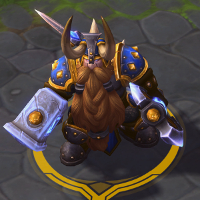
Muradin
Welcome to our Muradin guide for Heroes of the Storm. Here you will learn everything you need to know in order to play Muradin in a competitive environment, whether you play on your own or with a team.
Neutral Build
| Level 1 | Level 4 | Level 7 | Level 10 | Level 13 | Level 16 | Level 20 |
|---|---|---|---|---|---|---|
| 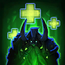 | 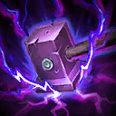 | 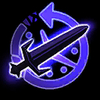 | 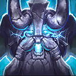 | 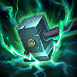 | 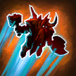 |  |
The Neutral Build combines decent survivability with outstanding offensive tools to threaten the enemy backline and frontline alike. This Build is suited for most game situations you are going to find yourself in.
Full Tank Build
| Level 1 | Level 4 | Level 7 | Level 10 | Level 13 | Level 16 | Level 20 |
|---|---|---|---|---|---|---|
The Full Tank Build is very similar to the Neutral Build and only distinguishes itself in the late game talent choices. Stoneform Icon Stoneform and Hardened Shield Icon Hardened Shield provide Muradin with extremely powerful defensive tools to survive most team fights. We recommend this Build if you must hold the frontline at all costs.
Haymaker Playmaker Build
| Level 1 | Level 4 | Level 7 | Level 10 | Level 13 | Level 16 | Level 20 |
|---|---|---|---|---|---|---|
| 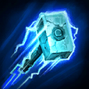 | 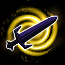 | 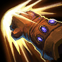 | 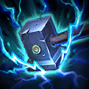 |  |
|
The Haymaker Playmaker Build is a niche option that should be used with caution. Given the right circumstances, however, it can catch your opponents off guard and deal a surprising amount of damage. It is crucial to have another Tank in your team, also you will need a strong Support to back you up while threatening the enemy backline.
Go Back